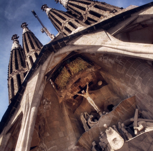
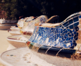
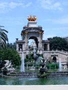
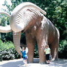
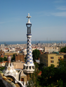

BARCELONA

A Livable, Lovable City
Wednesday, June 23
Thank goodness we didn’t have an early flight, because Karen couldn’t handle that! We left the house at 2:00 but had to go back to get George’s sunglasses...hope this isn’t some kind of sign!
We parked the car at SMART park, arriving early at JFK so that we could sort out the issue of having Karen’s ticket reserved under Karen Goma! (What can I say – it was an honest typo late at night!) We stood in very long line at the “help desk” and when an employee wandered over to take a look, Karen
PHOTOS
Large
La Sagrada Familia
Top
Bench in Parc Guell
2nd
Parc de la Ciutadella
3rd
Karen and Claire with friend
4th
View from Parc Guell
OUR FAVORITES
Foods
Tapas - any kind!
Fresh fruit from the market
Sight
Any and all of Gaudi’s work
Experience
Walking down the spiral staircase in La Sagrada Familia - there was no handrail!
Shopping
Along Passeig de Garcia (window shopping only, though!)






snagged her and got her attention. But she said that since we had applied for an upgrade (thanks to Joe Kubikowski!) the ticket needed to be re-issued from the first class / business class area. Traipsed over there and waited a long time while the agent punched his keypad and made a call. But in the end, everything was fine and we got to our gate with plenty of time to spare, especially since the flight was delayed by almost an hour.
So guess who got the upgraded seat??? Happy early birthday to Karen! Great food, a seat that stretched every which way, comfy pillow and blanket, personal video screen with games, TV shows and movies. What more could you ask for?!?!? (Claire and George, back in coach, could have asked for LOTS more!)
Thursday, June 24
We arrived in Barcelona around 9:30 a.m., went through customs, FINALLY found an ATM that worked, and then got a taxi to our hotel. It had a great set-up – 2 bedrooms, 2 baths, living area and kitchen (complete with washer that also dried!)
We met Ryan (so great to see him!), grabbed some showers then had lunch in the restaurant next door.
It was a short walk to La Sagrada Familia, a church considered to be the masterwork of renowned Spanish architect Antoni Gaudi. It was started in 1882 and is not expected to be completed until at least 2026! Took the elevator up to the top to check out the views, and then walked down a long (scary!) spiral staircase to the bottom.
Had dinner at El Nou restaurant down by the harbor area. We were early (8:00!) so the restaurant was basically empty – all the other diners were Americans!
Friday, June 25
We met up with our tour guide Christina at 10:00. She took us to Las Ramblas (the major thoroughfare, loaded with jugglers, people selling all sorts of things, and very dramatically dressed people posing as statues, unless of course you paid them some money and then they’d move and interact with the crowd), the food market (whoa – we’d never seen that much beautifully arranged, colorful produce in one place!), the harbor area (complete with its own arc de triomf, and all sorts of marine craft, from small sailboats to massive cruise ships), and the gothic quarter (such narrow streets! such unique and interesting shops! such a great way to get lost!). Christina gave us a wonderful, historical introduction to the city of Barcelona, but also told us to watch out for pickpockets and gypsies. (We even watched as a gypsy woman tried to stick her hand into a tourist’s wallet as she was attempting to pay for the rose that was offered to her by the gypsy woman.) Christina, who was probably around 60 years old, told us that for her, life under Franco was not all bad, because it was quiet and predictable.
Lunch at a cute café near the hotel was fun, because we were able to choose from many different tapas.
Then we ventured to Parc Guell, a garden complex with architectural elements designed by Gaudi. Ryan got separated from us taking pictures, but we met up in the courtyard where Claire recognized it as a scene in the Cheetah Girls second movie!
Off we headed to the 1992 Olympic site at Montjuic. We took a gondola ride, which took us out of the way of seeing the stadium, causing some frustration between mother and son. (OK, Karen admits that she lost it!) There was lots of walking, walking, walking but we finally got there and it was a site to see! But alas, no bus came by to take us home so thankfully, a taxi came by to save the day!
Hungry souls were we, so we opted for an Italian restaurant close to the hotel. Yummy! We ate outside and witnessed a huge parade of roller bladers streaming down the street at close to 11:00 p.m.!
Saturday, June 26
We set off for an “epicurean” tour of Barcelona at 10:00 with our guide, Theresa. Our first stop was to return to the food market; El Mercat de la Boqueria has the reputation of being one of the best fresh food markets in Europe and it's really incredible to walk among the stalls watching the huge variation of food, sweets and beverages. Claire had a Kiwi smoothie and Ryan had a few baskets of fresh fruit. Our special treats were a gourmet donut and an Iberian ham that was aged 3 years. The fish stall was humongous and the variety even bigger. From there we went to a cheese shop, off the beaten path run by a Scottish woman. It was an experience for Karen and George to witness Ryan sample wine with the cheese (our first sighting ever!). However, he hasn’t quite acquired the taste for it yet. (Yeah!)
Later in the afternoon we went to The Parc de la Ciutadella, Barcelona's most central park and one that Ryan ran in frequently. The park includes a zoo, a lake, a large fountain and several museums. The Catalan Parliament is seated at a building in the center of the park in a very grand building. Karen and Claire had power snoozes until someone came walking through selling soda with a very loud voice about a foot from Karen’s head, at which point both jumped about a meter into the air!
In the evening, we headed to the El Born district, where Karen went “Happy Pill” shopping (check it out here: http://barcelona.unlike.net/locations/307276-Happy-Pills) for her Bunco group and Claire found an awesome crêpe vendor who took 10 long minutes to make a creation that included chocolate sauce, cream and gelato.
Then we went to a tapas bar (the best ever because of the variety and presentation of all the offerings.) You take what you want and you pay based on how many toothpicks are left on your plate at the end! Claire of course did not partake, as she was still working on devouring her crepe (Karen had a hard time watching because it looked so decadent and enormous!)
We found an Irish pub down the street so that we could watch U.S. play Ghana in the world Cup, where we met a family from Michigan whose boys attended college at St. Edwards in Austin, TX. It was fun to talk to other Americans, but alas, the U.S. lost the match!
No dinner – Ryan was too tired (too many tapas?) and had too much homework to do!
Sunday, June 27
Today George, Karen and Claire decided to visit Poble Espanyol (Spanish Village), which was built for the 1929 International Exhibition in Barcelona on the Montjuïc hill. Its aim was to show visitors a representative sample of Spanish architecture. Today, it also serves is a collection of artisans showing and selling their beautiful handiwork. Karen bought a glass necklace and a scarf decorated with silver jewelry. There were several good restaurants as well, and we enjoyed a long, leisurely lunch at one of them. (George had a hard time getting used to the slow pace of Spanish meals, but by the end of the trip he was much, much better!)
From there we traveled to the Joan Miro Park, which we thought would be a lovely respite from the sun and heat of the day, but turned out to be mostly dirt and was visited by a family with loud, vicious dogs. Needless to say, we didn’t stay long!
For dinner we went back to the El Born district, where we took Theresa’s recommendation for a restaurant (Senyor Parellada) that served typical Catalan fare; some of the items were cod "as it was prepared by the monks of the Poblet monastery," baked monkfish with mustard and garlic sauce, roasted duck served with figs, and roasted rack of lamb with red-wine sauce. This was one of our favorites because it had a beautiful interior, a welcoming staff, generous portions of great tasting food, and cheap prices!